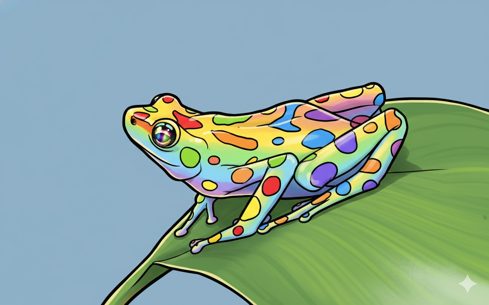
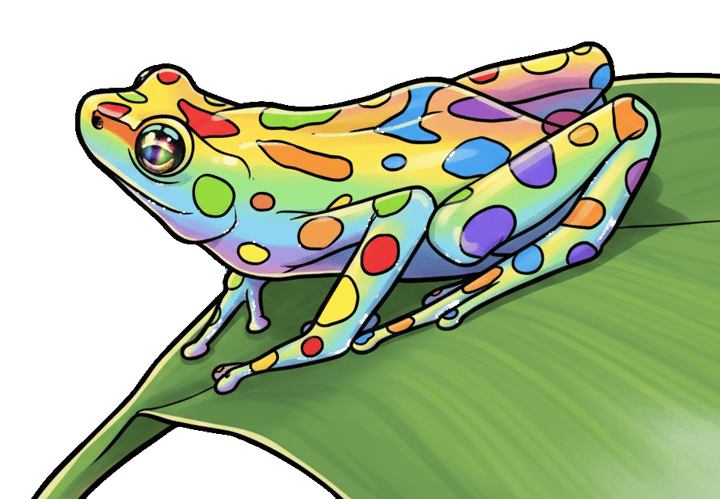

🪷The Pond #6: Nurseries, VPNs and color palettes
Also: Hang out with us on Mondays!
by Ada Homolova · January 21, 2026

Hello my dear frosches! 🐸
And a happy new year!
I hope you are recovered from the holidays and not in a deep state of sadness from everything that is happening in the world.
This newsletter is all about sharing knowledge. If that is your happy place, let’s dive in 👇
New at The Pond
🧪 The second data journalism mentorship cohort is in full swing! If you’d like to be kept up to date before the next one opens, you can put yourself up on the waiting list.

🦚 How to choose colors for data visualization and 4 tools for better palettes is the newest blogpost on one of my biggest challenges when creating a data visualisation: choosing a colour palette.
🐸 We’re starting something new: weekly community hangouts for freelancers and journalists who often work from home and miss the coffee machine chats. Want to join us? Every Monday at 15:30 at 🪷 The Pond 🪷!
What I am reading
🤖 What are human values anyway? Even after solving the problem of "how do we steer advanced AI at all", we need to decide: "steer towards which goals, which values?"
🗺️ Should you trust your VPN location? Journalists, activists, and NGOs may pick locations based on safety assumptions. However majority of VPN providers analyzed don’t route traffic via the countries they claim to.
Tutorials
📚 The classic investigative journalism manual got refreshed! Download Story Based Inquiry as a free PDF
🪓 How non-coding journalists can build Web Scrapers with AI - Real examples and prompts for AI-powered scraping without code.
📈 How to create a more accessible line chart - rules applicable not only to line charts!
Would you like to feature an interesting dataset, tutorial or your own work in this newsletter? Drop me an email.
That’s it for now!
With 💚 and 🐸,
Ada